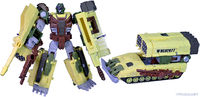

2005 IDW continuity
From Transformers Wiki
| ||||||||||||||||
The 2005 IDW continuity is the storyline of IDW Publishing's Generation 1 reboot comic book series, launched in 2005 and running until 2018. It re-imagined the traditional Autobot-Decepticon Great War as a galaxy-spanning conflict, with Cybertron abandoned as a dead husk and teams from both sides covertly operating on various alien worlds to defend or destroy the native populations—including Earth.
Later stories abandoned the cloak-and-dagger conflict in favor of a more traditional take on the Cybertronian war, before ending the war entirely. While early stories stuck to a small cast focusing mostly on the more-familiar 1984 characters, as the universe progressed its scope slowly expanded to cover more and more characters and concepts from late "Generation 1" and beyond. In addition to adapting characters from other continuities (such as Knock Out and Blackarachnia), authors felt free to introduce entirely new characters (such as Drift, Rung, Windblade, and Aileron) with substantive roles. Many new minor characters were also included throughout the series.
A 2016 retcon/expansion established that this continuity was part of the shared Hasbro Universe; two years later it was brought to an end with a climactic battle against Unicron before IDW debuted its rebooted Transformers continuity the next year.
Having run almost continuously for 13 years in some form or another, IDW's first Transformers universe is one of the largest and most developed Transformers continuities. Many of the plots and character arcs from "Phase 2" onward earned widespread praise from both devoted Transformers fans and the broader comic book/science fiction industries.
Overview
Simon Furman and the "-ations" era

|
|
-ations: |
|
|
|---|---|---|---|
|
Spotlight Volume 1
New Avengers/Transformers
Spotlight Volume 2
Spotlight Volume 3
Spotlight Volume 4 / Revelation
| |||
Veteran Transformers writer Simon Furman helmed the IDW continuity in its infancy, writing almost every series and one-shot to be released in its first few years. It began with 2005's Infiltration series, which ran for seven issues (including an introductory issue #0), which did away with the traditional "crashed on Earth 4 million years ago" origin in favour of a slow-burning "hiding in plain sight" storyline with emphasis on human characters, not dissimilar to the approach that was taken two years later by the live-action movie. However, detractors of this focus on human characters inspired the four-issue Stormbringer miniseries, which checked in on the ruined Cybertron. At this time, the concurrent Spotlight run of one-shots began. The first six of these (Shockwave, Nightbeat, Hot Rod, Sixshot, Ultra Magnus, Soundwave) elaborated on details from the first two miniseries and introduced cast members and concepts for 2006's six-issue Escalation miniseries. The Spotlight issues for Galvatron, Optimus Prime, Blaster and Arcee followed on from the events of that miniseries. The Earth-based conflict reached a climax in 2007's six-issue Devastation miniseries, and at this point (as evidenced by the apocryphal "Hail and Farewell" Transformers: Mosaic strip) Furman had sweeping plans for further series. However, IDW decided to switch directions for a major reboot, forcing Furman to squeeze the conclusion to the storyline he'd been building across the Spotlight stories into the four Revelation issues. His plans for tying up the Earth-based plots meanwhile escaped largely unscathed, with Spotlight: Grimlock leading into the five-issue Maximum Dinobots miniseries.
A few other writers contributed to the universe in its infancy:
- Nick Roche created Spotlight: Kup, taking place sometime between Stormbringer and Spotlight: Optimus Prime.
- Stuart Moore wrote a pair of titles loosely tying into Escalation:
- New Avengers/Transformers, a four-issue crossover taking place during the first issue of that miniseries;
- Spotlight: Ramjet, which takes place in its immediate aftermath.
- George Strayton wrote Spotlight: Mirage, which takes place mostly in a parallel dimension—however, a portion of the story is set in the main universe some time after Maximum Dinobots. It was originally planned to be released after Spotlight Grimlock, which would have reflected the chronological order, but the release order was switched.
- Klaus Scherwinski co-wrote the standalone Spotlight: Wheelie with Furman.
- Eric Holmes wrote The Transformers: Megatron Origin—this four-issue miniseries was originally conceived with Dreamwave's Generation 1 continuity in mind, but later stories massaged it into place as the earliest dedicated flashback series in the IDW continuity.
Chuck Dixon and "Evolutions"
|
|
Evolutions: |
|
|
|---|---|---|---|
|
Hearts of Steel Volume 1
Infestation 2 Volume 2
| |||
In the early days of IDW's Transformers comics, plans were made for a full line of Elseworlds-style miniseries under the title "Evolutions", planned to run alongside the main IDW continuity. The first of these, the four-issue Hearts of Steel, took place in an alternate timeline where the Transformers' first contact with humanity was in the late 19th century. This plan was shelved as focus shifted to comics based on the live action movies, but the later Infestation 2 tie-in returned to this timeline. Both of these stories were written by Chuck Dixon with art by Guido Guidi. They would be little more than a footnote, were it not for the fact that much, much later, a version of the events of these titles was folded into the mainstream continuity.
Shane McCarthy and All Hail Megatron
|
|
All Hail Megatron: |
|
|
|---|---|---|---|
|
All Hail Megatron Volume 1
All Hail Megatron Volume 2
All Hail Megatron Volume 3 / Spotlight Volume 5
All Hail Megatron Volume 4
| |||
During 2008, in an attempt to entice new readers, IDW brought on new writer Shane McCarthy for a twelve-issue maxiseries titled The Transformers: All Hail Megatron and another run of five mostly-standalone Spotlight issues (Blurr, Cliffjumper, Drift, Metroplex (by Andy Schmidt) and Jazz (by Josh van Reyk & Shaun Knowler). When the established fanbase's reaction to this new direction was... lukewarm, McCarthy suddenly began bringing more elements from Furman's run starting with issue #7, and following the series IDW released a four-issue "Coda" bringing some of Furman's ideas back to the fore. Each issue of the Coda contained two different stories by different writers, and most were set after the main series (with the exception of the two stories in issue #15 which respectively take place before and after Spotlight: Drift). McCarthy later returned with a four-issue The Transformers: Drift miniseries, set before that same Spotlight issue.
IDW Publishing's G.I. Joe
Late in 2008, IDW acquired the license to publish G.I. Joe comics from the previous holder, Devil's Due Press. Though their new G.I. Joe continuity—spearheaded by Chuck Dixon, Mike Costa, Christos Gage and Joe alumnus Larry Hama, with later contributions coming from writers like Fred Van Lente and Karen Traviss—took a similar approach to IDW's Transformers continuity, with a modernised, more "realistic" take on the original '80s premise, the two were not initially intended to take place in the same universe—indeed, the apocalyptic aftermath of All Hail Megatron seemingly left that impossible.
More than half a decade later, however, it was established via retcon that the events of both IDW's Transformers and G.I. Joe were part of a wider, shared "Hasbro Universe"; see below for details. While the majority of IDW's G.I. Joe comics aren't under this wiki's remit, and they certainly aren't required reading for later series in this continuity, you can see a full list of their titles on the G.I. Joe franchise page at our sister IDW Hasbro Wiki.
Mike Costa and The Transformers
|
|
The Transformers: |
|
|
|---|---|---|---|
|
Volume 1: "For All Mankind"
Bumblebee
Last Stand of the Wreckers
Volume 2: "International Incident"
Volume 3: "Revenge of the Decepticons"
Ironhide
Drift
Infestation Volume 1
Volume 4: Heart of Darkness
Volume 5: "Chaos Theory"
Volume 6: "Police Action"
Volume 7: "Chaos"
| |||
Another major change in direction came in late 2009, when new writer Mike Costa (already known for his critically acclaimed work on IDW's G.I. Joe: Cobra) was brought on board to spearhead a brand new ongoing series, titled simply The Transformers. This series ran throughout 2010 and 2011 for thirty-one issues telling a continuous story, though several other spinoffs were released during this time:
- Editor Andy Schmidt wrote The Transformers Continuum, a prose summary intended to bring new readers up to speed—but the resulting account was ridden with errors, and widely panned.
- Zander Cannon wrote The Transformers: Bumblebee, a four-issue miniseries taking place between issues #3 and #5 of the ongoing series and aimed at a slightly younger audience than usual.
- Fan-favourite writer/artist Nick Roche (Spotlight: Kup and "Everything in Its Right Place" from All Hail Megatron #15) returned alongside new writer James Roberts with the five-issue The Transformers: Last Stand of the Wreckers miniseries, set in deep space during the first arc of the ongoing.
- Mike Costa himself wrote two additional titles:
- Spotlight: Prowl, a one-shot told mostly in post-All Hail Megatron flashback but with a framing device set after issue #7 of the ongoing series, initially planned to be told later as part of the ongoing series itself but published early in response to fan backlash to Prowl's characterisation;
- The Transformers: Ironhide, another four-issue miniseries set on Cybertron some time before the later "Space Opera" story arc.
- McCarthy returned for the aforementioned The Transformers: Drift miniseries, set before his previous Spotlight issue.
- Dan Abnett and Andy Lanning wrote a pair of Galvatron-centric titles:
- Infestation, two issues set after the first arc of the ongoing series and tying into IDW's otherwise-disconnected multi-franchise "zombie invasion" crossover;
- The Transformers: Heart of Darkness, a poorly-received four-issue mini-series starring Galvatron and tying into the events of Infestation.
James Roberts, John Barber, and "Phase Two"
|
|
"Season 1": |
|
|
|---|---|---|---|
|
More Than Meets The Eye Volume 1
More Than Meets The Eye Volume 2
More Than Meets The Eye Volume 3
More Than Meets The Eye Volume 4
More Than Meets The Eye Volume 5
Robots in Disguise Volume 1
Robots in Disguise Volume 2
Robots in Disguise Volume 3
Robots in Disguise Volume 4
Robots in Disguise Volume 5
Dark Prelude
Dark Cybertron Volume 1
Dark Cybertron Volume 2
Autocracy
Monstrosity
Primacy
| |||
2012 ushered in not one but two new ongoing series as successors to the previous series, kicking off with a one-shot titled "Transformers: The Death of Optimus Prime" and beginning what many fans would come to describe as a "golden age" of Transformers comics. In their hardback compendiums, IDW themselves distinguished these titles from everything that had come before by labeling them "Phase Two".
This new era was helmed two writers:
- James Roberts (having made a name for himself with Last Stand of the Wreckers) wrote The Transformers: More than Meets the Eye, in which Rodimus led the crew of the Lost Light into space to find the mystical Knights of Cybertron.
- John Barber (writer of IDW's tie-ins to the live-action movies) wrote The Transformers: Robots in Disguise, in which Bumblebee led those remaining on Cybertron through the aftermath of the Great War.
Initially, these series were outlined for sixteen issues each, with the two plots running in parallel. A "Primus" Annual was released for each series, creating a loose two-part story (the MTMTE Annual takes place concurrently with its seventh and eighth issues, while the RiD Annual takes place after its ninth issue). The success of both series led to them being extended, and IDW began working in partnership to produce issues that could also be packed in with Hasbro's figures. The first batch of these was six Spotlight issues, later collected as "Dark Prelude", with a common thread focusing on Metroplex:
- Spotlight: Orion Pax, written by James Roberts and taking place some time before Spotlight: Blurr
- Spotlight: Thundercracker, written by John Barber and taking place some time before Spotlight: Metroplex
- Spotlight: Megatron, created by Nick Roche and taking place immediately after issue #13 of the previous ongoing series
- Spotlight: Bumblebee, taking place in the background of the "Police Action" story arc of the previous ongoing series
- Spotlight: Trailcutter and Spotlight: Hoist, written by James Roberts and set between issues #5 and #6 of More than Meets the Eye.
While Roberts used issues #17-22 of his series as an extended "season finale", Barber used his extended run to set up 2013's twelve-issue Dark Cybertron crossover, which was told across alternating issues of both series and co-written by both authors.
Around this time Chris Metzen and Flint Dille (the latter of whom wrote for the original Generation 1 animated series) wrote a trio of connected prequel stories: The Transformers: Autocracy, The Transformers: Monstrosity, and The Transformers: Primacy. These were ostensibly set sometime after Megatron Origin, Spotlight: Orion Pax and Spotlight: Blurr, but Metzen and Dille treated continuity rather loosely (apparently having planned to write a prequel to the original cartoon, not the IDW comics) and few ideas from these series were picked up in any significant capacity by the other writers, aside from as the basis for further retcons.
Post-Dark Cybertron, Mairghread Scott, and Windblade
|
|
"Season 2": |
|
|
|---|---|---|---|
|
More Than Meets The Eye Volume 6
More Than Meets The Eye Volume 7
More Than Meets The Eye Volume 8
More Than Meets The Eye Volume 9
More Than Meets The Eye Volume 10
Windblade
Robots in Disguise Volume 6
Robots in Disguise Volume 7
Combiner Wars
Windblade: Distant Stars
The Transformers Volume 8
The Transformers Volume 9
The Transformers Volume 10
Drift - Empire of Stone
Redemption of the Dinobots
Sins of the Wreckers
Till All Are One Volume 1
Titans Return
| |||
In 2014, after Dark Cybertron, new writer Mairghread Scott (previously known for her work on Transformers: Prime) was brought on board for The Transformers: Windblade. This four-issue miniseries starred a new female Autobot, the result of Hasbro's "Fan-Built Bot" poll, and continued with intrigue on Cybertron. Meanwhile, the two ongoings continued apace, splitting back off in their own directions but sharing a common thread of flashbacks to the immediate aftermath of Dark Cybertron. The story of Robots in Disguise transitioned to Earth, and shortly thereafter the series changed its name to "The Transformers" to prevent confusion with a new animated series (and causing a great deal of confusion with Mike Costa's ongoing series). More than Meets the Eye continued mostly without interruption through 2015 until issue #55. Ratchet briefly departed the main cast in issue #40 to take part in the four-issue The Transformers: Drift - Empire of Stone miniseries (written, of course, by Shane McCarthy) and First Aid departed after issue #43 to participate in IDW's next big event—Combiner Wars.
John Barber teamed up with Livio Ramondelli on The Transformers: Punishment, a digital-first comic that would lead directly into this new event. Combiner Wars was told in alternating issues of The Transformers (starting with issue #39) and a renewed Windblade series (renumbered back to #1). As with Dark Cybertron, these comics were packed in with various figures. A Combiner Hunters one shot was released, taking place between the first epilogue to the event (in The Transformers #42) and the second (in Windblade #4). Windblade's story continued for another three issues, creating a combined total of eleven issues across two miniseries.
The Transformers plowed ahead, with three brief sidetracks:
- The Transformers: Sins of the Wreckers, Nick Roche's five-issue sequel to Last Stand of the Wreckers, taking place between issues #44 and #45;
- The Transformers Holiday Special containing three stories by Scott, Roberts and Barber taking place between issues #45 and #46;
- The Transformers: Redemption, Barber's sequel to Punishment taking place parallel to issues #46-49.
At their conclusion, the ongoings briefly converged for Titans Return. This event consisted of a one-shot followed by a pair of stories told in The Transformers issues #56-57 and More than Meets the Eye issues #56-57. Around this time, Mairghread Scott got a fully-fledged ongoing of her own in the form of The Transformers: Till All Are One; the book suffered a highly delayed launch, and its events seem to begin after the events of Titans Return.
Revolution and "Phase Three"
|
|
"Season 3": |
|
|
|---|---|---|---|
|
ROM Volume 1
Micronauts Volume 1
Action Man
Revolution
Revolution: Heroes
Revolution: Transformers
Lost Light Volume 1
ROM Volume 2
Rom vs. Transformers: Shining Armor
Micronauts Volume 2
Micronauts: Into the Microspace
Till All Are One Volume 2
G.I. Joe Volume 1
Revolutionaries Volume 1
M.A.S.K. Volume 1
Optimus Prime Volume 1
Redemption of the Dinobots
Lost Light Volume 2
ROM Volume 3
Micronauts: Wrath of Karza
Till All Are One Volume 3
G.I. Joe Volume 2
Revolutionaries Volume 2
M.A.S.K. Volume 2
Optimus Prime Volume 2
Hasbro Heroes Sourcebook
Transformers/G.I. JOE: First Strike
Optimus Prime Volume 3
Lost Light Volume 3
Rom & The Micronauts
Scarlett's Strike Force
Optimus Prime Volume 4
Transformers vs. Visionaries
The Wreckers Saga
Lost Light Volume 4
Optimus Prime Volume 5
Unicron
| |||
This was when things got reaaally crazy.
In 2016, IDW announced the "Hasbro Universe"—a new direction for the Transformers continuity that will slowly bring other Hasbro properties into the fold. The first steps in building this new shared universe came in the form of a new six-issue series for the Micronauts, written by Cullen Bunn, and later for ROM (issues #0-4 courtesy of Chris Ryall and Christos Gage) and Action Man (a four-issue miniseries from John Barber). IDW's previous G.I. Joe comics were retroactively folded into the continuity, supposedly having taken place in the time since All Hail Megatron. Barber and Bunn teamed up to set these properties on a collision course in Revolution, the most ambitious crossover event in history.
IDW presented a checklist for the event at the back of each issue, but the publication order of the tie-ins didn't match the main series due to various delays and complications. For reference, a sequential ordering would be as follows:
- Revolution #0
- Revolution #1
- ROM: Revolution
- M.A.S.K.: Revolution (scheduled after #2, but introduces M.A.S.K. for their appearance there)
- Revolution #2
- Micronauts: Revolution
- Till All Are One: Revolution (scheduled before #4, but set between #2 and #3, building on the reveal from the Micronauts tie-in)
- Revolution #3
- G.I. Joe: Revolution
- The Transformers: Revolution
- Action Man: Revolution
- Revolution #4 (scheduled before the tie-ins for The Transformers and Action Man, but takes place afterwards)
- Revolution #5
- More than Meets the Eye: Revolution (a standalone comedy issue not referenced by the main series, scheduled before #5)
After the publication of Revolution, a non-canon three-issue spoof of the event was released: Aw Yeah Revolution! written by Art Baltazar in the style of his other comics. Originally solicited for five issues, the series was seemingly truncated down to three issues.
Till All Are One continued to run from issues #5-12, while More than Meets the Eye was relaunched as The Transformers: Lost Light. Roberts' story was still playing catch-up, chronologically speaking, but was so disconnected from everything else that it ran until issue #25 without really interacting with the rest of the Hasbro Universe. He found out that Lost Light was to be cancelled at issue #25 while writing issue #12, resulting in a great deal of reshuffling of plot threads from that point on. Scott's plans, however, were to be truncated even earlier, by IDW's next crossover.
ROM continued until issue #14. A pair of flashback stories focused on the Space Knight were also released: an annual and a five-issue Rom vs. Transformers: Shining Armor crossover miniseries. These stories are probably best read after issue #10, which included a similar flashback. Micronauts continued until issue #11, with an additional annual taking place between issues #9 and #10, before concluding in a five-issue miniseries titled Micronauts: Wrath of Karza.
New G.I. Joe and M.A.S.K. series were launched. Aubrey Sitterson's G.I. Joe ran for nine issues; eschewing the "realistic" approaches of earlier authors, Sitterson's take on the premise was one that incorporated overt science-fiction and fantasy elements, including the surprise introduction of Skywarp as a supporting character. Meanwhile, Brandon Easton's M.A.S.K. ran for ten issues. An M.A.S.K. annual by the co-writer of IDW's next event saw them team up with the G.I. Joe cast, but various inconsistencies with Easton's timeline make placing it chronologically a little tricky (the collected editions just put it between issues #5 and #6).
The Transformers was relaunched as Optimus Prime. An annual was published under a generic Transformers label, taking place between issues #8 and #9. John Barber also released The Transformers: Salvation, the final part of his Redemption of the Dinobots trilogy (the Dinobots would later show up in issue #13). At the same time, Barber also wrote the eight-issue team book Revolutionaries, which continued plot threads from The Transformers, Action Man, and Revolution while featuring frequent guest-stars from the other series. After issue #10 of Optimus Prime, IDW's next crossover began.
Three issues of the Hasbro Heroes Sourcebook profile series were released—in addition to profiles on various characters in the universe, each issue included a four-page comic story. 2017's First Strike event, written by Mairghread Scott and David A. Rodriguez, brought the Transformers and G.I. Joe together in a six-issue miniseries. A series of backup strips titled The Origins of Evil ran alongside the event. Meanwhile, four loosely-connected two-part tie-in stories were published for other series, taking place concurrently with the crossover without directly factoring into its events:
- Optimus Prime #11-12
- Optimus Prime: First Strike & Transformers: First Strike
- G.I. Joe: First Strike & M.A.S.K.: First Strike
- Micronauts: First Strike & ROM: First Strike

Following the event, the non-Transformers books were relaunched as Rom & The Micronauts by Gage and Scarlett's Strike Force by Sitterson. Sitterson's story was cancelled prematurely, ending on a cliffhanger in issue #3, with the script to issue #4 and outlines to the rest of the series later being released on his Patreon. Gage fared a little better, releasing the planned five issues of the miniseries.
Another Optimus Prime two-parter, #13 and #14's "The Dead Come Home", picked up where the event left off. Scott returned one final time to tie up her dangling plot threads in a Till All Are One annual; Barber wrote another annual set roughly concurrently with hers and leading into his next six-issue arc, "The Falling". The five-issue Transformers vs. Visionaries miniseries introduced another old Hasbro property to the universe, and Roche returned in its immediate aftermath for Transformers: Requiem of the Wreckers, the final part of his Wreckers Saga.
The 2005 IDW continuity finally drew to a close in 2018 with Barber's six-issue Transformers: Unicron crossover. An additional issue #0 was released a little out-of sequence for Free Comic Book Day; the events of Optimus Prime #22, released three months later, bookend those of that issue and are intended to be read afterwards. To check in on the Hasbro Universe at large, a series of four-page back-up strips (mostly by those books' creative teams) were printed alongside the event.
Following the continuity's conclusion, IDW published a chronological prose recap of the entire story in the form of Transformers: Historia by Chris McFeely. In 2020, quite unexpectedly, Chris Ryall returned for the three-issue Rom: Dire Wraiths flashback miniseries, set in the Hasbro Universe.
A new series set in a fully-rebooted continuity began in 2019.
Collected editions
Every single comic published as part of the 2005 IDW continuity, bar one (see below), has been collected in at least one trade paperback. Each trade paperback typically collects four to six issues, usually forming one or more complete arcs.
Since 2010 IDW has also been collecting stories in hardback with The Transformers: The IDW Collection, which presents stories in a "suggested reading order" that ultimately leaves much to be desired. Phase One was collected across eight volumes, the first two of which were also collected together in a paperback compendium. Phase Two's collections numbered twelve, with a reading order that haphazardly jumps back and forth between the two ongoings. Phase Three managed to eke out three volumes before IDW's losing of the license forced publication of the collections to cease, cutting off right before First Strike. Still, these collections remain the only way of getting many of the older series new in print.
If you live in the UK, Hachette's Transformers: The Definitive G1 Collection similarly attempted to print every story in hardback along with previous Marvel and Dreamwave series. The reading order presented in this partwork, however, is every bit as baffling as that of The IDW Collection and is further complicated by the fact that individual volumes are themselves released out of order to keep people subscribed for the full duration of the run.
Requiem of the Wreckers was only collected as part of a larger trade paperback—Transformers: The Wreckers Saga, containing over ten issues that had already seen release in prior collections. It was later released in Vol. 80 of the aforementioned Definitive G1 Collection.
A similar situation would have occurred for the 2017 Micronauts annual, which would have been collected as part of Micronauts: Into the Microspace. Unfortunately, the trade was cancelled, leaving this annual as the only comic of this continuity not to have been collected in a trade.
Timeline
See main article: 2005 IDW timeline.
Artists
Many artists contributed to the IDW continuity across its thirteen-year run.
Line art
- Alex Milne illustrated a whopping 1407 pages. He was the main artist of Megatron Origin, The Transformers: Drift, More than Meets the Eye, Rom vs. Transformers, and Transformers: Unicron. In addition, he worked on Spotlight: Arcee, several issues of the 2009 Transformers series, an issue of Optimus Prime and an issue of Lost Light.
- Andrew Griffith worked on 1020 pages, most notably as the main artist of Robots in Disguise, but also contributing to many others, such as a coda story in All Hail Megatron, inking 2 issues of Last Stand of the Wreckers, the full series of Micronauts: Wrath of Karza (with Ron Joseph), 3 pages of Lost Light, one issue Optimus Prime, 4 pages of the Annual 2018, 7 pages of issue 24, and 7 pages of the sixth issue of Transformers: Unicron.
- Guido Guidi illustrated 722 pages for Hearts of Steel, Infestation 2, All Hail Megatron, Spotlight: Galvatron, Spotlight: Mirage, Drift - Empire of Stone, Last Stand of the Wreckers, The Transformers, More than Meets the Eye, Robots in Disguise, Revolutionaries, and Optimus Prime: First Strike.
- Nick Roche illustrated 603 pages, including Spotlight issues for Shockwave, Hot Rod, Kup, Hardhead, and Megatron along with Infestation and The Death of Optimus Prime. He was the main artist on Maximum Dinobots, and also contributed to Devastation, the All Hail Megatron Coda, The Transformers, and More than Meets the Eye. He was the creative force behind IDW's Wreckers stories.
- E. J. Su illustrated 511 pages. He was the main artist for Infiltration, Escalation, Devastation, and Revelation, in which he redesigned many G1 characters with a sense of realism and updated, modern alternate modes, while still being relatively faithful to the originals. He also illustrated Spotlight: Jazz, Spotlight: Prowl, the flashback sequences in All Hail Megatron #7, and The Transformers #7. Years later, he would return to the IDW comics for the final arc of Lost Light.
- Jack Lawrence created 320 pages over 16 issues of Lost Light.
- Don Figueroa illustrated 297 pages including the entirety of Stormbringer and Spotlight: Optimus Prime. He also contributed a story to the All Hail Megatron Coda. For the 2009 ongoing series, to which he contributed eight issues, Don brought an entirely new (and controversial) aesthetic, with detailed and complex designs that were evocative of those used in the live-action film series. He was also responsible for designing Megatron's stealth bomber form.
- Brendan Cahill illustrated 270 pages including the entirety of the "Police Action" storyline in The Transformers and several contributions to Robots in Disguise, More than Meets the Eye, Lost Light, and Requiem of the Wreckers.
- Kei Zama illustrated 246 pages as they were the main artist of Optimus Prime, as well as contributing 9 pages to the sixth issue of Unicron.
- Casey Coller illustrated 205 pages, including Spotlight: Blurr, Spotlight: Drift, the entirety of Ironhide, and a couple of contributions to All Hail Megatron, The Transformers and Barber's various ongoings. He regularly provided variant covers.
- Saren Stone created 132 pages for Windblade and Robots in Disguise.
- Ulises Fariñas created 89 pages for Heart of Darkness. He was clearly unfamiliar with Transformers and his artwork did no favors for the already-disjointed writing, resulting in perhaps the most-reviled miniseries in IDW Transformers history.
- Emiliano Santalucia illustrated 52 pages across Spotlight: Blaster and All Hail Megatron #9, #10, and #14.
- James Raiz illustrated 41 pages—a few for Maximum Dinobots, and the entirety of More than Meets the Eye #22.
- Jimbo Salgado and Emil Cabaltierra contributed 37 pages total in the More than Meets the Eye Annual.
- Robert Deas illustrated 14 pages of All Hail Megatron #9.
- Marcelo Ferreira pencilled 6 pages of the last issue of Drift - Empire of Stone.
Colors
- Josh Burcham colored an amazing 2029 pages. He started almost at the beginning with Infiltration #1, the full Stormbringer arc, 5 Spotlights and 2 issues of Devastation. He colored the main set of All Hail Megatron plus an issue and a half of the coda, 2 issues of Maximum Dinobots and all issues of Last Stand of the Wreckers. Into "Phase 2", he worked on The Death of Optimus Prime, 23 issues of More than Meets the Eye, "The Thirteenth Day of Christmas" (art and colors), the full Sins of the Wreckers series, 6 issues of The Transformers Vol. 2, and work on More than Meets the Eye: Revolution. Finally he colored 21 issues of Optimus Prime, its Annual and the Requiem of the Wreckers one-shot.
Toyline
Although IDW's stories were never really intended to promote any particular toyline being produced by Hasbro, over the years there were many instances of Hasbro looking to IDW's character designs for inspiration, or vice versa! The following list can be broadly split into the following categories:
- Toys in bold are directly inspired in some part by their appearance in the comics.
- Toys which are underlined share a "common ancestor" with an IDW design, usually in the form of a particular piece of concept art.
- The rest were either directly used for reference by IDW's artists, or specifically requested by Hasbro for inclusion in the comics.
Stormbringer
|
|
|
|
Spotlight
|
|
|
|
|
Megatron Origin
|
|
|
|
|
Devastation
|
|
|
|
|
All Hail Megatron
|
|
 |
The Transformers
|
|
|
Last Stand of the Wreckers
|
|
|
|
Drift
|
|
|
|
|
The Death of Optimus Prime
|
|
|
|
|
More than Meets the Eye / Lost Light
|
|
Robots in Disguise
Autocracy Trilogy
|
|
Dark Cybertron
|
|
Windblade
|
|
|
Combiner Wars
|
|
Combiner Hunters
|
|
|
Till All Are One
|
|
Titans Return
|
|
|
|
Optimus Prime
|
|
Transformers vs. Visionaries
|
|
|
|
Requiem of the Wreckers
|
|
|
|
Unicron
|
|
|

{kind=link}
{kind=link}
{kind=link}
{kind=link}
{kind=link}
{kind=link}
{kind=link}
{kind=link}
{kind=link}
{kind=link}
{kind=link}
{kind=link}
{kind=link}
{kind=link}
{kind=link}
{kind=link}
{kind=link}
{kind=link}
{kind=link}
{kind=link}
Notes
{kind=link}

- The IDW continuity overtook the original Marvel Comics US continuity in terms of raw issue count with issue #6 of the 2009 ongoing series. Primus only knows how many more issues there are now.
- When IDW first picked up the Transformers license, Simon Furman pitched a story that would have tied in to his idea for a Cybertron ongoing comic, and would possibly have been in continuity with the Dreamwave Productions comics. The G1 story would have begun with the destruction of Cybertron and the discovery that the destruction of Unicron in the Aurex cluster had destabilized the entire omniverse. To save all of existence, the Autobots would have travelled across the galaxy attempting to reassemble an artifact called the 'Decepticon Matrix', which would have resurrected Unicron. This plot parallels that of Cybertron, in which the Autobots seek out the Cyber Planet Keys to revive Primus. Vector Prime would have appeared in both series, travelling between universes to guide both groups of Autobots in their quest. It seems that series would then have come together with the concurrent Cybertron comic as Transformers from across the multiverse were brought together for a final, epic clash.[1]
- A couple of other ultimately-unused pitches are known to the public:
- Alongside Spotlight: Kup, Nick Roche came up with his own idea for a Spotlight: Blurr issue, taking place on a battlefield entirely in the space of a single second. This was felt to be a little too high-concept. Another unused idea was for a Spotlight: Roadbuster, about him "training his cadets and doing terrible things to them", which later informed Sins of the Wreckers.[2]
- In 2007, Roche and James Roberts pitched an Octane-based issue of The Transformers: Spotlight to IDW.[3] Some of the concepts from the pitch were later used in More than Meets the Eye.[4]
- Roche also pitched a Spotlight: Rumble, first alluded to in the Sins of the Wreckers trade paperback, which described it as Rumble on "a weapons grade pub-crawl" being tailed by Stakeout.[5] At his panel at TFNation 2022, Roche gave a more detailed summary: with Laserbeak and Ravage seen early in Furman's run, but Rumble and Frenzy absent, it would have seen Rumble waking up on an alien planet with a hangover, a wanted fugitive of Ultra Magnus, who sends a cadet, Stakeout, to bring him in. Rumble finds himself in trouble, and Stakeout is forced to try and keep him alive so that he can arrest him; the two are "handcuffed to each other". Rumble doesn't want to use his piledrivers because he's hungover, but ultimately does so he can get away, knocking out Stakeout in the process. Rumble would have turned into a motorbike in this issue, and there would've been a chase through the streets of the alien city. Stakeout's role as Magnus' cadet made its way into Sins, and Rumble (perhaps through coincidence) wound up as a motorcycle in John Barber's run.[2]
- A Spotlight: Cosmos was announced at San Diego Comic-Con 2008 for release in 2009, with art by Andrew Griffith, to be written by Chris Mowry.[6][7][8] Later, though, Mowry announced on a (now defunct) IDW forum thread that the project was likely postponed or cancelled altogether, citing demotivation as a result of fan backlash towards IDW's output at the time.[9] Now, the cover art is the only piece of this we've officially seen... but in May 2009, the unofficial Transformers: Mosaic strip "I Am..." was released, created by Mowry and Griffith. How exactly this was related is unknown.[10]
- A four-issue miniseries titled Legacy of Rust was planned at some point, starring Punch/Counterpunch and Jimmy Pink.[11] It was announced as being in development by Andy Schmidt at San Diego Comic-Con 2010,[12] and brought up again at BotCon 2011.[13] All four issues were written by Stuart Moore,[14] but the title was delayed[11] until changes in the IDW universe meant that it could no longer be released without significant rewrites to fit the new status quo, and the scripts have yet to be revealed to the public.
- In a couple of cases, in-canon material by writers on the continuity has been published in an unofficial capacity online:
- After the release of Spotlight: Cyclonus, Nick Roche posted a one-page joke comic finishing a dropped plot thread.
- Later, Josh Burcham illustrated a short deleted scene by James Roberts, originally written for More than Meets the Eye #22 but cut for space.
- It was originally unclear whether Kelly Thompson's Jem and the Holograms comics were part of the Hasbro Universe or not. Some version of the band was shown to exist there, but later information meant that events in that series were incompatible with those that took place in the Hasbro Universe at large.
- Paul Allor's Clue miniseries was in a similar situation, as its story gave no indication that it was taking place in the Hasbro Universe. However, the Hasbro Tribune was printed in the back of the first issue, and Sarah Gaydos later "officially confirmed" that it was indeed part of the continuity, so... we guess it's canon?[15]
- Synergy: A Hasbro Creators Showcase was released in the aftermath of the continuity, featuring an autobiographical comic by Mairghread Scott and some short strips focusing on Hasbro Universe characters (but generally not set in the canon).
External links
- IDW Reading Guide at the TFWiki community blog
References
- ↑ Pitch printed in The Transformers: The Best of Simon Furman
- ↑ 2.0 2.1 Nick Roche at TFNation 2022, 2022/08/14
- ↑ "In 2007, @jroberts332 and I attempted to pitch Spotlight: Octane. Here's the cover and character design. https://t.co/5fS4W2grfz"—NickRoche on Twitter, 2016/05/30
- ↑ "Not a script, but James wrote a very extensive outline which he then hacked down. Some of it has shown up in MTMTE. https://t.co/7sjztgmVv5"—NickRoche on Twitter, 2016/05/30
- ↑ Sins of the Wreckers TPB - "Noisemaze Logic"
- ↑ "If you're a comics or Transformers fan (or both) you may have seen this shown at Comic-Con. Well, I've finally decided to post it here. Just think of it as a preview..."—Andrew Griffith on deviantART, 2008/09/06
- ↑ "After a not so revealing IDW panel today at SDCC, there were only a few new tidbits of upcoming releases by IDW. They confirmed that a Spotlight Cosmos is in the works, and they talked about the upcoming Spotlight Blurr a little."—Skalor on Seibertron, "IDW News From SDCC (Spotlight Cosmos!)", 2008/07/25
- ↑ "Spotlight: Cosmos Chris Mowry and Andrew Griffith art. Some time in 2009. Tie in with Acsention / All Hail timelines"—BaCon on TFormers, "SDCC 2008 Day 2 - IDW Transformers & GI Joe Panel", 2008/07/25
- ↑ "If it's done, it will be made to fit into the "universe" as neatly as possible. But in all honesty, the reaction to things as of late with G1-related stories really has me not interested in doing this at all. There seems to be a "bash it before you see it" epidemic as of late, so I really have to ask myself "why bother?" I've said it before, I'm a lucky guy who has been given some incredible opportunities. But this isn't my main job, I don't NEED to do this. Recent events have really made me take a closer look at this. We all have a right to express our opinions, but the blatant disrespect and rudeness that people have—and continue to show—towards creators or the fans that speak up for them, is really discouraging. We'll see, though. I've got a few other things to finish up first, and Andrew and I do have a rough outline of where we want this to go. If it's going to happen, you'll hear it here first. But in our minds, Cosmos is absolutely clunky. We're not going to make him a secret agent or anything. On second thought...."—Chris Mowry on the IDW forums (dead link)
- ↑ Transformers: Mosaic on deviantART, "I Am...", 2009/05/27
- ↑ 11.0 11.1 http://tformers.com/article.php?sid=15437
- ↑ http://www.comicbookresources.com/?page=article&id=27527
- ↑ http://tformers.com/transformers-botcon-2011-idw-publishing-chaos-begins-panel/15843/news.html
- ↑ http://womenwriteaboutcomics.com/2015/02/27/windblade-returns-in-transformers-combiner-wars/
- ↑ "Bombshell revelation from @sarahgaydos at today's @IDWPublishing panel: Clue DOES take place in the Hasbro shared universe. Official canon, no takebacks."—Paul Allor on Twitter, 2018/03/03